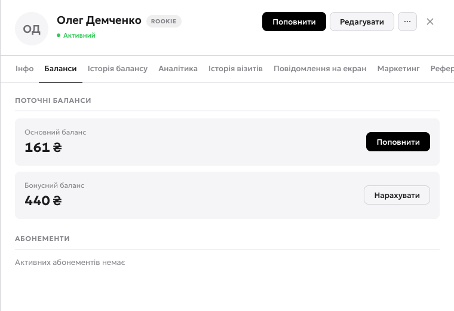
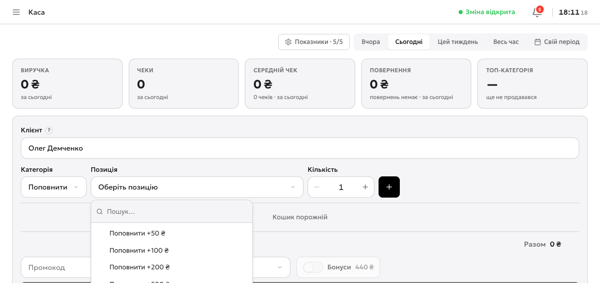
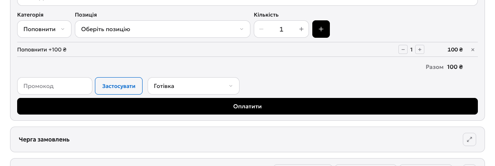

Спершу відкрийте зміну
Це обовʼязкова умова: усі гроші каса записує у зміну, тому без відкритої зміни поповнити баланс не вийде. Порядок такий: відчинили клуб → відкрили зміну → і вже з того акаунта, який її відкрив, проводите поповнення.
Знайдіть клієнта
Два шляхи, обидва ведуть в одне місце. Перший — Каса, і там у полі «Клієнт» почати вводити імʼя, нікнейм, телефон або пошту. Другий, зручніший — Клієнти → клік по клієнту → кнопка «Поповнити»: каса відкриється з уже підставленим клієнтом.
- 1Основний баланс — гроші, з яких списується час. Саме його ви поповнюєте.
- 2«Поповнити» — перекидає в касу з уже підставленим клієнтом, шукати його вдруге не треба.
- 3«Нарахувати» — це бонусний баланс, окрема історія: бонусами можна платити частково, але час вони не купують.

Проведіть суму
У касі виберіть категорію «Поповнити», потім позицію — готову суму або «Своя сума», додайте її в кошик кнопкою «+», виберіть спосіб оплати й натисніть «Оплатити». Це весь шлях, він займає менше хвилини.
- 1«Зміна відкрита» — без цього напису в шапці каса нічого не проведе.
- 2Клієнт — підставився сам, якщо ви прийшли з картки. Інакше почніть вводити імʼя, нікнейм, телефон або пошту.
- 3Категорія «Поповнити» — не товар і не послуга, а саме гроші на баланс.
- 4Позиція — готові суми +50, +100, +200, +500, +1000 або «Своя сума» для будь-якої іншої.

- 1Разом — перевірте суму перед оплатою: саме стільки зайде на баланс клієнта.
- 2Спосіб оплати — готівка або картка. Від цього залежить, куди сума ляже у звіті зміни.
- 3«Оплатити» — після цього гроші на балансі, і клієнт може сідати за ПК.

Перевірте баланс і історію
Повернітесь у Клієнти — баланс у рядку вже новий. А вся картина по грошах клієнта живе в його картці, на вкладці «Історія балансу»: там видно і ваші поповнення, і автоматичні списання за сесії.
Це кінець інструкції
Клуб описаний, ціни виставлені, ігри увімкнені, Shell стоїть, клієнти заходять і платять. Що варто тримати під рукою:
- Зміна — відкривається на початку дня, звіт друкується в кінці.
- Каса — поповнення, товари, повернення. Усе пише в зміну.
- Клієнти — баланс, історія, повідомлення на екран.
- Обладнання — стан машин і команди: заблокувати, перезавантажити, написати гостю.